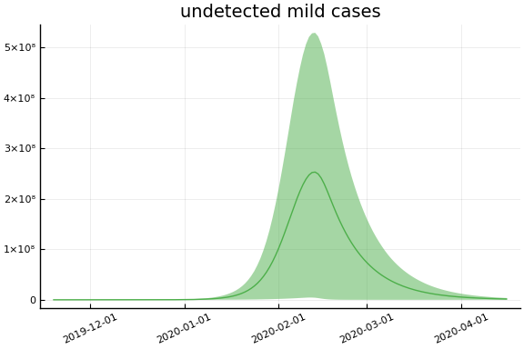
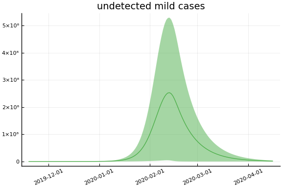
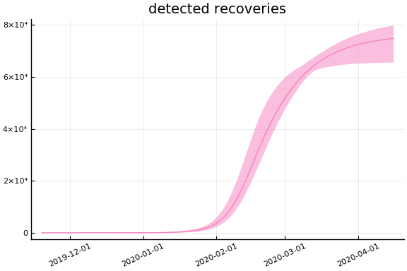
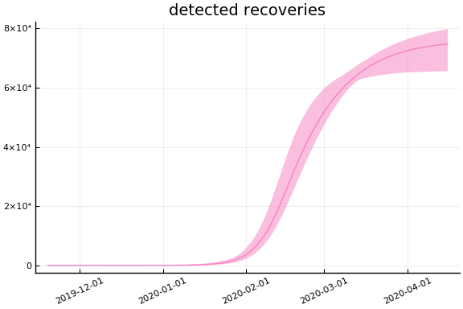

This work is licensed under a Creative Commons Attribution-ShareAlike 4.0 International License
using CovidSEIR, Plots, DataFrames, JLD2, StatsPlots, MCMCChains
Plots.pyplot()
jmddir = normpath(joinpath(dirname(Base.find_package("CovidSEIR")),"..","docs","jmd"))
covdf = covidjhudata();
China¶
using Dates
dayt0 = Dates.Date("2020-01-22") - Dates.Day(65)
china = CountryData(covdf, "China", 65)
CovidSEIR.CountryData{Float64,Int64}(1.39273e9, [65, 66, 67, 68, 69, 70, 71
, 72, 73, 74 … 141, 142, 143, 144, 145, 146, 147, 148, 149, 150], [17.0,
18.0, 26.0, 42.0, 56.0, 82.0, 131.0, 133.0, 171.0, 213.0 … 3335.0, 3337.0
, 3339.0, 3340.0, 3343.0, 3343.0, 3345.0, 3345.0, 3346.0, 3346.0], [28.0, 3
0.0, 36.0, 39.0, 49.0, 58.0, 101.0, 120.0, 135.0, 214.0 … 77410.0, 77567.
0, 77679.0, 77791.0, 77877.0, 77956.0, 78039.0, 78200.0, 78311.0, 78401.0],
[503.0, 595.0, 858.0, 1325.0, 1970.0, 2737.0, 5277.0, 5834.0, 7835.0, 9375
.0 … 1973.0, 1905.0, 1865.0, 1810.0, 1794.0, 1835.0, 1829.0, 1761.0, 1699
.0, 1656.0])
using Turing
mdl = CovidSEIR.TimeVarying.countrymodel(china)
cc = Turing.psample(mdl, NUTS(0.65), 5000, 4)
import JLD2
JLD2.@save "$jmddir/china_$(Dates.today()).jld2" cc dayt0
JLD2.@load "$jmddir/china_dhmc_2020-04-13.jld2" cc dayt0;
cc = MCMCChains.Chains(collect(cc.value.data), replace.(cc.name_map.parameters, r"([^\[])([1-9])" => s"\1[\2]"))
Object of type Chains, with data of type 5000×15×4 Array{Float64,3}
Iterations = 1:5000
Thinning interval = 1
Chains = 1, 2, 3, 4
Samples per chain = 5000
parameters = τ, sigD, sigC, sigRc, a, pE0, p[1], p[2], β[1], β[2], β
[3], γ[1], γ[2], ρ[1], ρ[2]
2-element Array{MCMCChains.ChainDataFrame,1}
Summary Statistics
parameters mean std naive_se mcse ess r_hat
────────── ────────── ───────── ──────── ──────── ──────── ───────
τ 0.0000 0.0000 0.0000 0.0000 80.3213 1.5862
sigD 90.1865 108.1679 0.7649 7.6652 80.3213 16.4095
sigC 12749.7844 4659.6012 32.9484 322.0747 80.3213 4.5433
sigRc 8238.5858 3466.7500 24.5136 242.3239 80.3213 4.9360
a 0.7721 0.1378 0.0010 0.0069 120.2959 1.1108
pE0 0.0000 0.0000 0.0000 0.0000 80.3213 1.6474
p[1] 0.0004 0.0005 0.0000 0.0000 80.3213 7.1795
p[2] 0.4376 0.4398 0.0031 0.0309 80.3213 6.8857
β[1] 0.3384 0.3067 0.0022 0.0213 80.3213 2.0684
β[2] 0.7464 0.6525 0.0046 0.0298 124.5414 1.1639
β[3] 1.4304 1.4707 0.0104 0.1042 80.3213 9.1300
γ[1] 1.2668 1.2386 0.0088 0.0878 80.3213 13.3651
γ[2] 0.1599 0.1464 0.0010 0.0081 86.9155 1.3707
ρ[1] 0.8703 0.1652 0.0012 0.0117 80.3213 2.2865
ρ[2] 87.7994 1.4004 0.0099 0.0850 80.3213 1.5699
Quantiles
parameters 2.5% 25.0% 50.0% 75.0% 97.5%
────────── ───────── ────────── ────────── ────────── ──────────
τ 0.0000 0.0000 0.0000 0.0000 0.0000
sigD 23.6088 26.6456 28.8155 91.4797 292.9900
sigC 4388.5359 10075.1023 14738.3582 15853.7267 17853.3371
sigRc 4613.6964 5290.9410 6950.5976 10492.7804 14948.0661
a 0.4875 0.6742 0.7763 0.8873 0.9793
pE0 0.0000 0.0000 0.0000 0.0000 0.0000
p[1] 0.0000 0.0000 0.0001 0.0007 0.0014
p[2] 0.0021 0.0033 0.1933 0.8908 0.9903
β[1] 0.0269 0.1482 0.2338 0.3377 1.1417
β[2] 0.0000 0.2806 0.5279 1.1032 2.3880
β[3] 0.0530 0.1431 0.8618 2.9038 3.8533
γ[1] 0.0819 0.0852 0.6694 2.5336 3.0000
γ[2] 0.0336 0.0461 0.0849 0.2376 0.5292
ρ[1] 0.4234 0.7741 0.9711 0.9943 0.9995
ρ[2] 85.6977 86.6899 87.6515 88.7356 90.8120
Estimates¶
plot(cc)

describe(cc)
2-element Array{MCMCChains.ChainDataFrame,1}
Summary Statistics
parameters mean std naive_se mcse ess r_hat
────────── ────────── ───────── ──────── ──────── ──────── ───────
τ 0.0000 0.0000 0.0000 0.0000 80.3213 1.5862
sigD 90.1865 108.1679 0.7649 7.6652 80.3213 16.4095
sigC 12749.7844 4659.6012 32.9484 322.0747 80.3213 4.5433
sigRc 8238.5858 3466.7500 24.5136 242.3239 80.3213 4.9360
a 0.7721 0.1378 0.0010 0.0069 120.2959 1.1108
pE0 0.0000 0.0000 0.0000 0.0000 80.3213 1.6474
p[1] 0.0004 0.0005 0.0000 0.0000 80.3213 7.1795
p[2] 0.4376 0.4398 0.0031 0.0309 80.3213 6.8857
β[1] 0.3384 0.3067 0.0022 0.0213 80.3213 2.0684
β[2] 0.7464 0.6525 0.0046 0.0298 124.5414 1.1639
β[3] 1.4304 1.4707 0.0104 0.1042 80.3213 9.1300
γ[1] 1.2668 1.2386 0.0088 0.0878 80.3213 13.3651
γ[2] 0.1599 0.1464 0.0010 0.0081 86.9155 1.3707
ρ[1] 0.8703 0.1652 0.0012 0.0117 80.3213 2.2865
ρ[2] 87.7994 1.4004 0.0099 0.0850 80.3213 1.5699
Quantiles
parameters 2.5% 25.0% 50.0% 75.0% 97.5%
────────── ───────── ────────── ────────── ────────── ──────────
τ 0.0000 0.0000 0.0000 0.0000 0.0000
sigD 23.6088 26.6456 28.8155 91.4797 292.9900
sigC 4388.5359 10075.1023 14738.3582 15853.7267 17853.3371
sigRc 4613.6964 5290.9410 6950.5976 10492.7804 14948.0661
a 0.4875 0.6742 0.7763 0.8873 0.9793
pE0 0.0000 0.0000 0.0000 0.0000 0.0000
p[1] 0.0000 0.0000 0.0001 0.0007 0.0014
p[2] 0.0021 0.0033 0.1933 0.8908 0.9903
β[1] 0.0269 0.1482 0.2338 0.3377 1.1417
β[2] 0.0000 0.2806 0.5279 1.1032 2.3880
β[3] 0.0530 0.1431 0.8618 2.9038 3.8533
γ[1] 0.0819 0.0852 0.6694 2.5336 3.0000
γ[2] 0.0336 0.0461 0.0849 0.2376 0.5292
ρ[1] 0.4234 0.7741 0.9711 0.9943 0.9995
ρ[2] 85.6977 86.6899 87.6515 88.7356 90.8120
Fit¶
sdf = simtrajectories(cc, china, 1:150)
f = plotvars(sdf, china, dayt0=dayt0)
plot(f.fit, xlim=nothing, ylim=(0, maximum(china.active)*2))

Implications¶
for fig in f.trajectories
display(plot(fig, xlim=nothing))
end

 
 


 
